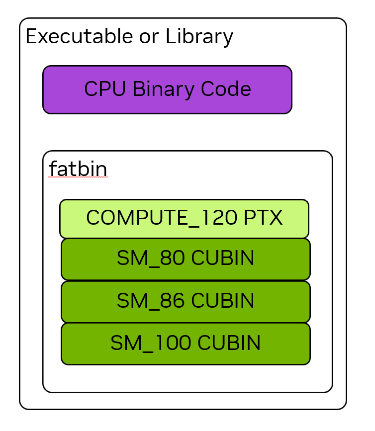

1.3. CUDA 平台#
NVIDIA CUDA 平台由众多软硬件组件与关键技术构成，旨在支持异构系统计算。本章介绍 CUDA 平台中应用开发者需要理解的一些基础概念与核心组件。与 编程模型 一章类似，本章不依赖特定编程语言，而适用于所有使用 CUDA 平台的开发场景。
1.3.1. 计算能力与 SM 版本#
每个 NVIDIA GPU 都有一个 计算能力（Compute Capability，CC）编号，用于标识该 GPU 支持的功能以及一些硬件参数。这些规范记录在 第 5.1 节 附录。 所有 NVIDIA GPU 及其计算能力的列表均保存在 CUDA GPU 计算能力页面.
计算能力以 X.Y 格式表示为主版本号和次版本号，其中 X 是主版本号，Y 是次版本号。例如CC 12.0，主版本为12，次版本为0。计算能力直接对应SM的版本号。例如，CC 12.0的GPU内的SM有SM版本 sm_120。该版本用于标记二进制文件。
第 5.1.1 节 显示如何查询和确定系统中 GPU 的计算能力。
1.3.2. CUDA 工具包与 NVIDIA 驱动#
NVIDIA 驱动NVIDIA 驱动程序是一个软件组件，必须安装在主机系统的操作系统上，并且是所有 GPU 使用所必需的，包括显示和图形功能。 NVIDIA 驱动程序是 CUDA 平台的基础。除了 CUDA 之外，NVIDIA 驱动程序还提供使用 GPU 的所有其他方法，例如 Vulkan 和 Direct3D。 NVIDIA 驱动程序的版本号如 r580。
CUDA工具包 是一组用于编写、构建和分析 GPU 计算软件的库、头文件与工具。CUDA Toolkit 与 NVIDIA 驱动是彼此独立的软件产品。
CUDA运行时 是 CUDA 工具包提供的库之一的特例。 CUDA 运行时提供 API 和一些语言扩展来处理常见任务，例如分配内存、在 GPU 与其他 GPU 或 CPU 之间复制数据以及启动内核。 CUDA 运行时的 API 组件称为 CUDA 运行时 API。
CUDA 兼容性 文档提供了不同 GPU、NVIDIA 驱动程序和 CUDA 工具包版本之间兼容性的完整详细信息。
1.3.2.1. CUDA 运行时 API 和 CUDA 驱动程序 API#
CUDA 运行时 API 是在称为 CUDA驱动程序API，这是 NVIDIA 驱动程序公开的 API。本指南重点介绍 CUDA 运行时 API 公开的 API。如果需要，可以仅使用驱动程序 API 来实现所有相同的功能。某些功能只能使用驱动程序 API 来使用。应用程序可以使用其中一个 API，也可以同时使用两者。部分 CUDA 驱动程序 API 涵盖运行时和驱动程序 API 之间的互操作。
CUDA 运行时 API 函数的完整 API 参考可以在 CUDA 运行时 API 文档。
CUDA 驱动程序 API 的完整 API 参考可以在 CUDA 驱动 API 文档。
1.3.3. 并行线程执行（PTX）#
CUDA 平台中一个基础但常被忽视的层是 并行线程执行（PTX）虚拟指令集架构（ISA）。 PTX 是一种用于 NVIDIA GPU 的高级汇编语言。 PTX 在真实 GPU 硬件的物理 ISA 之上提供了一个抽象层。与其他平台一样，应用程序可以直接用这种汇编语言编写，尽管这样做会给软件开发增加不必要的复杂性和困难。
特定领域的语言和高级语言的编译器可以生成 PTX 代码作为中间表示 (IR)，然后使用 NVIDIA 的离线或即时 (JIT) 编译工具生成可执行的二进制 GPU 代码。这使得 CUDA 平台能够使用 NVIDIA 提供的工具支持的语言以外的语言进行编程，例如 NVCC：NVIDIA CUDA 编译器.
由于 GPU 功能会随着时间的推移而变化和增长，因此 PTX 虚拟 ISA 规范是有版本的。 PTX版本与SM版本一样，对应于计算能力。例如，支持计算能力8.0所有特性的PTX称为 compute_80.
有关 PTX 的完整文档可以在 PTX ISA。
1.3.4. 库宾与法特宾#
CUDA应用和库通常使用C++这类高级语言编写。该高级语言被编译为PTX，然后PTX被编译为物理GPU的真正二进制文件，称为 CUDA 二进制文件, or cubin 简而言之。 cubin 对于特定的 SM 版本具有特定的二进制格式，例如 sm_120.
使用 GPU 计算的可执行文件和库二进制文件包含 CPU 和 GPU 代码。 GPU 代码存储在一个称为 fatbin。 Fatbins 可以包含用于多个不同目标的 cubins 和 PTX。例如，可以使用针对多个不同 GPU 架构（即不同 SM 版本）的二进制文件构建应用程序。当应用程序运行时，其 GPU 代码会加载到特定 GPU 上，并使用 fatbin 中适合该 GPU 的最佳二进制文件。
{kind=link}

图 8 可执行文件或库的二进制中同时包含 CPU 代码和用于 GPU 代码的 fatbin 容器。fatbin 可同时包含 cubin 形式的 GPU 二进制代码与 PTX 虚拟 ISA 代码；其中 PTX 代码可在运行时针对未来目标进行 JIT 编译。#
Fatbin 还可以包含一个或多个 PTX 版本的 GPU 代码，其用途在 PTX 兼容性. 图8 显示了一个应用程序或库二进制文件的示例，其中包含多个 cubin 版本的 GPU 代码以及一个版本的 PTX 代码。
1.3.4.1. 二进制兼容性#
NVIDIA GPU 在某些情况下保证二进制兼容性。具体来说，在计算能力的主要版本内，次要计算能力大于或等于目标版本cubin的GPU可以加载并执行该cubin。例如，如果应用程序包含为计算能力 8.6 编译的 cubin，则该 cubin 可以在计算能力 8.6 或 8.9 的 GPU 上加载和执行。但是，它无法加载到计算能力为 8.0 的 GPU 上，因为 GPU 的 CC 次要版本 0 低于代码的次要版本 6。
NVIDIA GPU 在主要计算能力版本之间不具有二进制兼容性。也就是说，为计算能力 8.6 编译的 cubin 代码将不会加载到计算能力 9.0 的 GPU 上。
在讨论二进制代码时，二进制代码通常被称为具有如下版本： sm_86 在上面的例子中。这相当于二进制文件是为计算能力 8.6 构建的。这种简写方式经常被使用，因为开发人员通过它向 NVIDIA CUDA 编译器指定此二进制构建目标， nvcc.
注意
仅承诺由 NVIDIA 工具创建的二进制文件的二进制兼容性，例如 nvcc。不支持手动编辑或生成 NVIDIA GPU 的二进制代码。如果以任何方式修改二进制文件，兼容性承诺将失效。
1.3.4.2. PTX 兼容性#
GPU 代码可以以二进制或 PTX 形式存储在可执行文件中，这在 库宾斯和胖宾斯。当应用程序存储 GPU 代码的 PTX 版本时，可以在应用程序运行时对该 PTX 进行 JIT 编译，以获得等于或高于 PTX 代码的计算能力的任何计算能力。例如，如果应用程序包含 PTX compute_80，PTX代码可以被JIT编译为更高的SM版本，例如 sm_120 在应用程序运行时。这样可以向前兼容未来的 GPU，而无需重建应用程序或库。
1.3.4.3. 即时编译#
应用程序在运行时加载的 PTX 代码会由设备驱动编译为二进制代码，这个过程称为即时编译（JIT）。即时编译会增加应用程序加载时间，但允许应用程序受益于每个新设备驱动程序带来的任何新编译器改进。它还允许应用程序在编译应用程序时不存在的设备上运行。
当设备驱动程序即时编译应用程序的 PTX 代码时，它会自动缓存生成的二进制代码的副本，以避免在应用程序的后续调用中重复编译。当设备驱动程序升级时，缓存（称为计算缓存）会自动失效，因此应用程序可以从设备驱动程序内置的新即时编译器的改进中受益。
自 CUDA 的最早版本以来，PTX 在运行时 JIT 编译的方式和时间已经放宽，从而在何时和是否 JIT 编译部分或全部内核方面提供了更大的灵活性。该部分 延迟加载 描述可用选项以及如何控制 JIT 行为。还有一些控制即时编译行为的环境变量，如中所述 CUDA 环境变量.
作为使用的替代方案 nvcc 要编译 CUDA C++ 设备代码，NVRTC 可用于在运行时将 CUDA C++ 设备代码编译为 PTX。 NVRTC是CUDA C++的运行时编译库；更多信息可在 NVRTC 用户指南中找到。